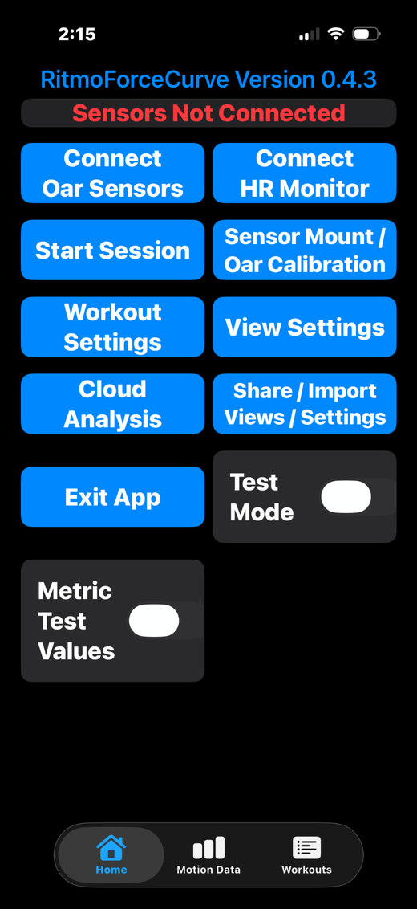
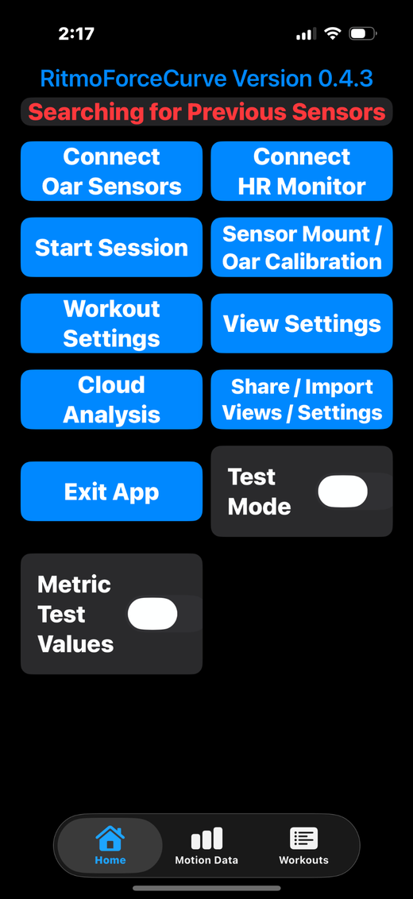
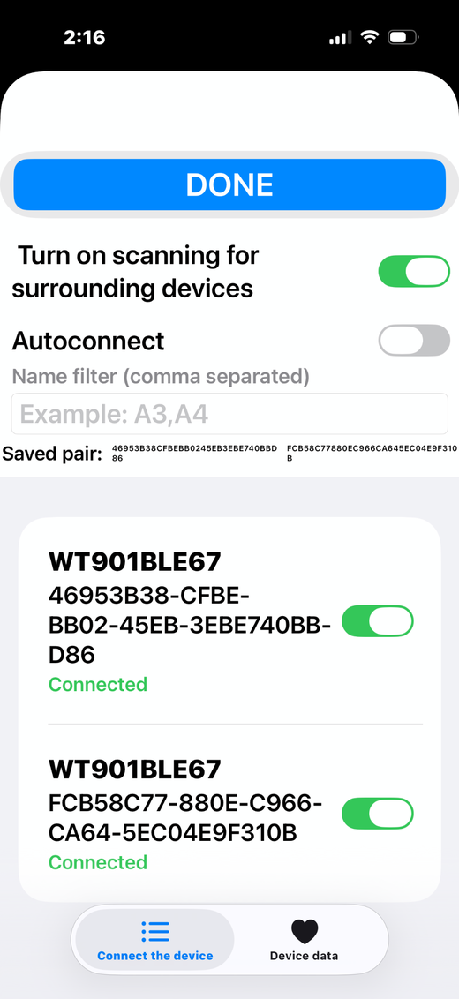
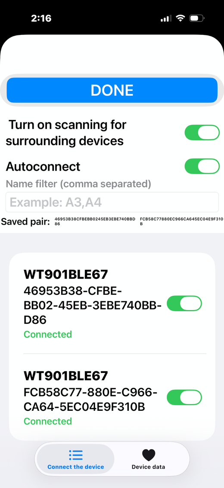
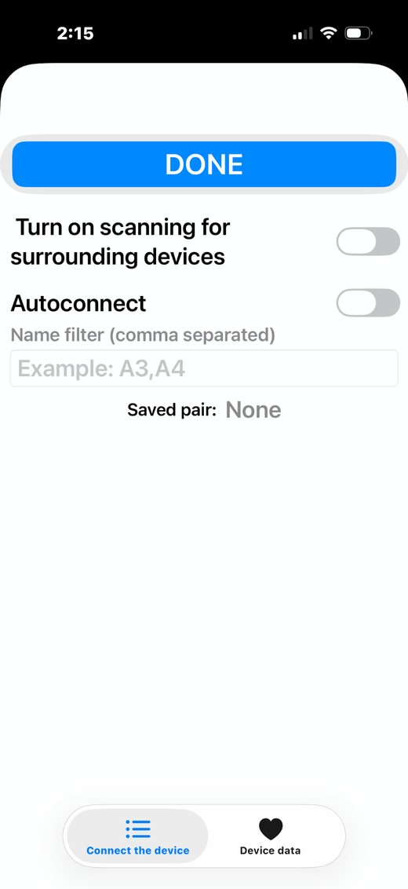
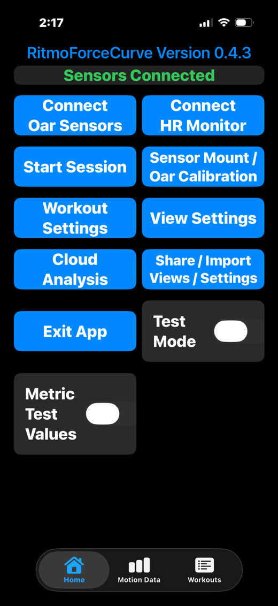
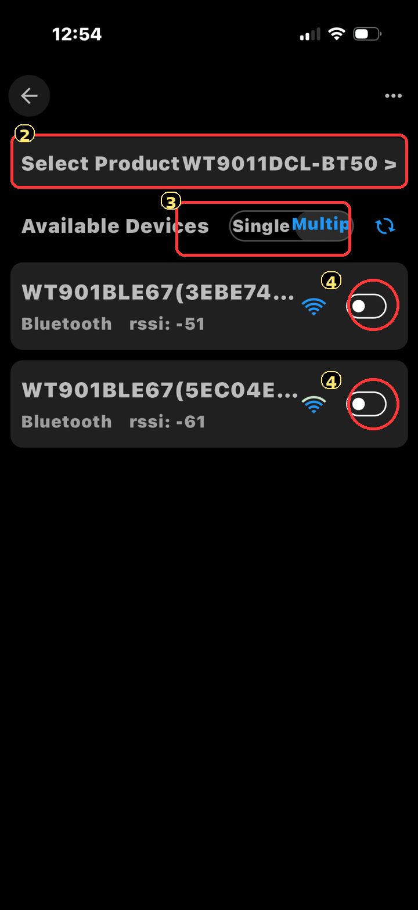
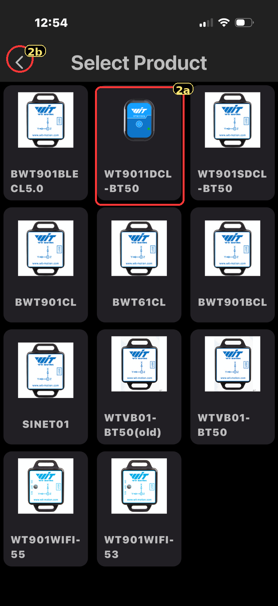
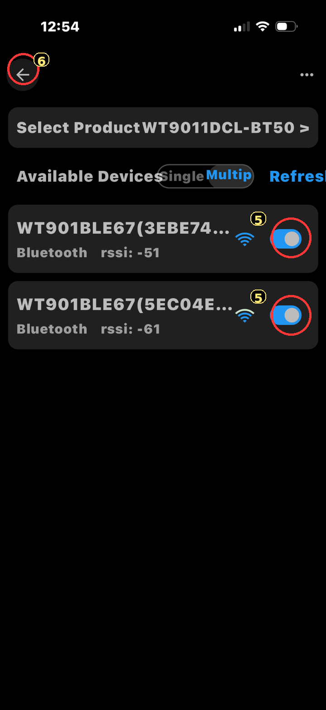

ON THE WATER
Feedback as you row
Follow bend, moment or handle force alongside oar speed as you row. Choose the curves and numbers that help you connect the catch, drive and release.
Explore the iOS app →Watch the stroke and its curves together. Use full screen for a closer look.
See how you load the oar, carry the drive and release the blade.
Record oar motion and loading, see live feedback on your iPhone, and review each stroke alongside GPS and boat movement after your row.
ON THE WATER
Follow bend, moment or handle force alongside oar speed as you row. Choose the curves and numbers that help you connect the catch, drive and release.
Explore the iOS app →AFTER YOUR ROW
Compare strokes, pieces and group averages. See the GPS route, boat motion and stroke replay together when those recordings are available.
Explore cloud analysis →GET SET UP
Assemble the kit, select your saved oar and connect its sensors. Guided alignment and a stiffness calibration keep the measurements tied to your setup.
Assemble your kit →START WITH YOUR PHONE
Connect your saved oar, complete the guided alignment, and record the workout with live curves and metrics. Use two sensors per oar; connect four to record two oars.
iOS setup & recordingRecord your oar sensors in WitMotion. Add a separate Sensor Logger recording when you want phone motion and GPS in the report.
Android setup & recordingBoth recording paths use the same Cloud Analysis and interactive report. See pricing for available products and plans.
FROM THE OAR TO THE BOAT
Open the example to explore oar curves, GPS and boat motion from one recorded workout. Follow individual strokes or compare averages, then use the boat-and-oar replay to see the movement.
Choose metrics by subject: Oar, GPS, Time, Boat and Body. Save your plot and replay setup to reuse on another workout. Boat movement needs a securely mounted phone; blade depth and water-contact trails depend on the recorded setup and supplied geometry.
MEASURE THE OAR YOU HOLD
Two sensors measure how the oar bends and moves. With the correct stiffness calibration and dimensions, the app uses that bend to calculate moment, force, work and power.
The motion measurement follows the shaft through the catch, drive and release. Sweep angle, blade rotation and loading describe different parts of the stroke; the metric guide explains each one.
How the measurements work →Oar Kit · Assembly & Mounting
Assemble each sensor in its housing, secure both mounts to the oar, then use the guided motions to align them. The same kit works with iOS and Android recording.
Lay out the parts below. Repeat the same assembly for your second sensor.


The curved saddle snaps flush into the matching curve at the back of the housing, then rests against the oar. The drawings below show how the parts engage.
Start with the empty black housing. Hook the retaining flange of one yellow clip over the matching housing edge, then press the clip fully home. Fit the second clip on the opposite side, with its flange toward the housing.
Check that both clips are seated and their long strap slots are unobstructed.

Stretch the flexible ring around the outside edge of the sensor. Keep it even around the sensor rather than twisted or bunched at a corner.
Insert the sensor through the open back of the housing. Press it in evenly so the button and logo face remain visible through the front opening. Check that the ring stays seated as the sensor goes in.

The saddle goes on the curved back of the housing, between the sensor and the oar. The housing and saddle have matching curves, so they nest flush together. The concave outer face rests against the shaft.
Engage one edge lip, then gently flex the opposite edge until it snaps into place. Check that both lips are engaged, the saddle sits flush with no gap, and the sensor remains seated.

Place the saddle against the shaft and wrap the strap around the oar. At each yellow clip, feed the strap through the slot from the inside (the oar side) to the outside. Fold each end back onto the strap on that same side and press it firmly onto itself.
The strap has hooks and loops together on one face; the other face is smooth. Keep the smooth back against the oar, then fold each end back without twisting so the two fastening faces meet.
The mount should stay put when you gently try to slide or rotate it. Check it again after feathering and squaring the oar.

Next · Motion Alignment
With both mounts secure, record the still, feather/square and sweep movements. The app or Cloud Analysis uses them to learn how the sensors sit on this oar.
Use this motion alignment after mounting or repositioning a sensor. Oar stiffness calibration is a separate step that sets the Moment/Bend Factor used for moment, work and power.
Confirm the active oar name, side, sensor identities and sensor positions. Save the motion alignment and the stiffness calibration for that setup, then make a short recording to check both sensors. Repeat alignment and review the stiffness setup whenever you move a sensor.
A phone used for boat motion needs a secure hull mount. Follow the iOS recording guide or Android phone-motion guide for the data to record.
Oar Kit · Sensor Direction
Use the offset button to tell which way the sensor should face along the shaft. Then let the motion alignment establish the sensor reference for your oar.
The round button is offset within the housing opening. Fit the sensor so that this button sits closer to the blade end of the oar.
Repeat alignment if either sensor is removed, turns in its mount, or moves to a different position.

The mounting check gets the sensors facing the right way. The alignment recording uses deliberate oar movements to account for the remaining mounting angles and resting sensor offsets.
Choose the instructions for your phone below. Each guide takes you from connection and alignment through recording and upload.
Sensor direction and motion alignment establish the measurement reference. Stiffness calibration separately sets the conversion from bend to moment, work and power. Check both after changing the sensor positions.
Oar kit · setup reference
Setup videos for mounting and using the RitmoForceCurve oar sensors.
Step-by-step overview of mounting the sensors and connecting them for use on the water.
Open videoUse the video as a mounting overview and the illustrated guide for the current assembly sequence. Both offset sensor buttons face the blade; sensor +Y points toward the handle. Finish with motion alignment and the stiffness calibration for your oar.
iOS · RECORDING AND LIVE FEEDBACK
Connect your saved oar, record the whole workout, and review the same session on your phone or in Cloud Analysis.
Get the iOS beta in TestFlight ↗Connect your sensors
Use the latest iOS beta for these controls. For Android, follow the Android recording guide.
In Oar Sensors, use Scan oar label if the oar has a QR label. Otherwise select your saved oar or choose Setup new oar. Confirm the name, side, type and sensor pair, then connect both sensors. Enable Autoreconnect if you want the pair to reconnect next time.
Manage oars organizes a separate collection of saved oars and calibration components. Importing or editing that collection does not automatically change your active workout oar.
Open Oar Settings → Sensor Alignment. Complete the four core movements; the same series also offers optional Square swoop and Squared float. Save the alignment. Repeat it after moving or replacing a sensor.
Check the active Moment/Bend Factor (MBF, N·m/°). Use a measured stiffness calibration, a suitable existing Cperm with the current dimensions, or an explicitly chosen manual MBF estimate. Bend shape and timing come from the aligned sensors; calibrated moment, work and power need the correct scale.
Enter the oar dimensions and sensor positions even when using a manual factor. The recording retains those values for analysis.
Simple six-step iOS alignment → · Stiffness, dimensions and overrides →
Secure the iPhone to the boat so it moves with the hull. Keep it fixed throughout the session. Allow the required Bluetooth, motion and location permissions; phone motion and GPS provide the boat-motion and speed inputs.
Review Workout Settings and the Auto Piece Timer, choose a live view, then tap Start Session. Record through the work and recovery intervals. Stop the session when the whole workout is finished.
For automatic upload, enable Upload after each workout. Upload begins after Stop Session or End Workout finishes saving. Pending uploads retry while the app is open and when you return.
After upload, iOS and Android use the same Cloud Analysis and report workflow. Re-running can reuse the existing server files while they remain available.
Open Session Views → Create & Edit Views to choose numbers and curves. Core shows the everyday choices; Advanced includes Core plus more detail. New setups start at Advanced, and the app remembers your choice. Both use the same subject headings: Oar, GPS, Time, Boat and Body.
| Subject | Examples |
|---|---|
| Oar | Bend, moment, handle force, work, power, catch miss and finish wash. Advanced adds horizontal sweep angle, oar depth angle and twist. |
| GPS | Ground speed, pace, distance and course. |
| Time | Stroke rate, drive time, piece time and workout time. |
| Boat | Acceleration, relative speed and distance, set, fused speed, Speed check, Distance check and Energy-loss check. |
| Body | Recorded heart rate and work-based calorie estimates. |
Choose GPS speed and pace separately. Bend, moment and handle force are also separate selections, each with its own units. Boat values need a phone fixed to the hull; fused speed and Energy-loss check also need GPS. Missing inputs show a dash or a gap.
Open Workout Metrics → All Stroke Metrics for individual strokes. Tap a piece or group to see its summary and available CSV export. Pieces are continuous work intervals; groups collect similar strokes from across the workout.
Recorded curve views let you browse strokes and compare group averages. The time view includes a quarter-cycle before and after the selected cycle when neighboring data exist. Vertical ranges stay consistent while browsing. Mean curves can show a variability band where at least two strokes contribute.
The cloud report adds the session overview, map, animation and report-view presets. Live values can change after a stroke finishes or the workout is processed with its complete recording.
The workout saves the available oar motion, phone motion, GPS and heart-rate data, together with each oar’s dimensions, sensor positions, alignment, stiffness calibration and applied factor. Enter the dimensions even when using a manual factor.
Cloud Analysis shows this snapshot under Recorded oar settings. Changing the active oar later leaves the earlier workout’s setup intact. Reprocessing older workouts requires their original recordings; a saved summary cannot supply missing sensor data.
In Two-oar setup, enable Track two oars and assign two saved oars, with two sensors each. Tap Connect both oars. Each oar uses its own alignment, calibration and reference.
Choose either oar, Both or Average in the rowing view. For sculling, individual readings describe each physical oar and rower work/power add both. For two sweep rowers, My oar and Teammate’s oar can be on the same or opposite sides; summaries show mean work/power per rower, with the measured total labeled separately. Heart rate belongs to My oar only.
Average curves use matched strokes. Unmatched strokes remain available in the individual views.
Choose the oar you are using, connect its saved sensors, and confirm the oar name and connection status before starting your session.
A saved oar keeps the setup tied to the correct sensor pair. Do not start while an expected sensor is still disconnected.

The screenshots use the older label Autoconnect. Your saved pair can be reused each row.

WitMotion names can look alike. If several pairs appear, move away from other sensors or identify your pair before selecting it. You do not need to infer shaft-versus-sleeve position from the Bluetooth name; follow the setup and alignment workflow.

Switch the active oar in Connect Oar Sensors. Review its details and alignment in Oar Settings. Check the selected name before recording.

Do this away from other active sensors if possible. Closing another app or disconnecting another phone may be necessary before the sensor becomes available.

The updated alignment series has four required movements and optional Square swoop and Squared float. The float reference is saved with the oar and uploaded with the workout. Confirm the active Moment/Bend Factor and dimensions before relying on calibrated loading.

In Two-oar setup, enable Track two oars, assign a saved record to each oar and tap Connect both oars. Each oar needs two sensors: four in total. Sculling pairs and two sweep rowers are supported; the sweep oars can be on the same or opposite sides. Confirm all four connections before starting. Two-oar display and totals →
Oar settings & calibration iOS sensor alignment Record and upload the workout
iOS · OAR SETUP
Four core movements, followed by two optional steps. Work through the series with the sensors attached to the oar you will use.
Use the latest iOS beta for this six-step sequence.
Keep the mounts secure. Moving recordings do not need a still pause at either end. Use the optional steps when convenient; you can skip them within the same series.
Keep the blade feathered and the oar completely still for 10 seconds. Rest it on a stable support if possible.
Keep the shaft pointing in one direction. Feather and square the blade 5–6 times.
Keep the blade feathered and the shaft approximately level. Sweep back and forth through at least 90° for 5–6 repetitions.
Keep the blade square and the shaft approximately level. Sweep back and forth through at least 90° for 5–6 repetitions.
Keep the blade square. Sweep back and forth while raising and lowering it in a smooth oval, 5–6 times. Keep it clear of the water.
Square the blade, let it float on the water, and keep the boat level and the oar steady for 12 seconds.
The float reference is saved with the oar settings and included in the workout upload.
Keep the blade clear of the water during the level sweeps. Follow the app’s calculate/save prompts to retain the alignment with this oar.
Check the saved alignment belongs to this oar and sensor pair. Repeat alignment if a sensor moves, rotates or is replaced. A matching QR label can supply saved alignment, but check that the mounts and sensor pair still match.
The squared float is part of this series; you do not need to add a second float capture afterward. Check the reference again when the oar or boat setup changes. If you use a separately measured manual waterline in Workout Settings, that manual value takes priority; review it before relying on the float reference.
Alignment establishes the sensors’ common reference. Stiffness calibration supplies the scale for moment, work and power.
The saved alignment, oar settings and available float reference travel with the workout. The recording keeps the alignment used for that workout. Re-analysis uses that saved setup, even if you select another active oar later.
Record and upload from iOS → · Shared cloud analysis guide →
Choose the live piece-detection settings before you row. The workout saves the settings used for that session.
The Auto Piece Timer (APT) identifies continuous work intervals. In Workout Settings, choose the trigger and thresholds for your session.
| Control | Meaning |
|---|---|
| APT Trigger | Rate uses the stroke-rate threshold; Power uses power; Both requires both; Either accepts either. |
| Rate / Power Threshold | The effort required to qualify. Power-based detection depends on the active oar calibration. |
| Min Distance | Filters very short pieces from the summary. |
| Auto Piece Time Cutoff | How long inactivity may continue before the piece ends. Repeated non-qualifying strokes can also end it. |
| Piece Rounding | Choose distance or time and its rounding increment. |
Detection needs confirming strokes. A piece’s final endpoint may move back to its last qualifying portion once rowing falls below the trigger or stops.
GPS pace describes movement over the ground. PowerSplit is a power-derived pace equivalent; wind, current and boat conditions can make the two differ.
Side, type and Moment/Bend Factor come from the selected oar. Check the source and any override in Oar Settings. The recording captures the applied scale and saved dimensions.
The current alignment series includes an optional 12-second squared float. Its saved reference travels with the oar and workout. Where a manual waterline below pin (cm) is entered, measure vertically from pin to water surface with the boat level; positive means below the pin. Manual entry takes priority until cleared. Check the reference again after rigging or boat loading changes.
Changing settings for future workouts does not alter a session already recording.
Work-based calories use measured work and the selected efficiency assumption. Use Two equivalent oars only when one measured oar represents half of your work; follow the separately labeled two-oar summaries when recording both.
Upload the whole workout from Cloud Analysis. Review its recorded settings or choose intended analysis overrides. To automate the upload, enable Upload after each workout; pending uploads retry while the app is open and when you return.
Use Change Settings and Re-run to rerun detection, grouping or processing while raw files remain available. Use a new upload for a different recording. The finished HTML report’s temporary calibration adjustment updates effort-derived values but keeps its generated pieces and groups fixed.
iOS · OAR SETUP
Save the oar dimensions, align the sensors, and set the scale that converts bend into moment.
Select the oar in Connect Oar Sensors, or scan its oar label. In Oar Settings → Active Oar details → Edit details, check side, type, model, length, inboard/outboard and S1/S2 positions. Confirm the connected pair belongs to it.
Manage oars is a separate collection for organizing oars, alignments and calibrations. Its imports and edits do not automatically replace the active oar or Workout Settings. Manage oars guide →
Open Sensor Alignment for the selected oar. Complete Bias, Feather and square, Feathered level sweep and Square level sweep. The series then offers optional Square swoop and Squared float.
For the float: square the blade, let it float on the water, and keep the boat level and the oar steady for 12 seconds. Its reference is saved with the oar and uploaded with the workout.
A known-weight calibration measures Cperm, the shaft’s stiffness constant. The app uses Cperm, the selected shaft model and the current oar dimensions/sensor positions to calculate Moment/Bend Factor (MBF).
Alternatively, enter a Cperm already measured for this shaft, or enter a manual MBF estimate. Dimensions alone cannot determine stiffness. Matching PowerSplit to a familiar effort is an estimate, not a measured calibration.
Known-weight calibration → · Dimensions and sensor positions →
| Priority | Source | What happens |
|---|---|---|
| 1 | Manual Moment/Bend Factor | The entered MBF is used directly. Cperm and dimensions do not calculate the factor; saved inboard still determines handle force. |
| 2 | Manual Cperm | The entered stiffness constant and current dimensions calculate MBF. |
| 3 | Measured Cperm | The selected calibration’s stiffness constant and current dimensions calculate MBF. |
An active direct MBF override stays in charge until turned off, even after saving a new calibration. The stored calibration and dimensions are retained. Check the displayed value, source and units before recording.
Moment (N·m) = MBF (N·m/°) × bend (°). Perpendicular handle-tip force (N) is moment divided by inboard length (m). Work adds positive moment × forward sweep in radians. Power divides drive work by the whole stroke cycle, including recovery.
Current iOS and report controls display Moment/Bend Factor, N·m/°. Older files may store FBF in J/degree²; the software converts that legacy value by 180/π. Do not convert a field already displaying N·m/° again.
For the same shaft and shaft model, a measured Cperm can be reused after changing length, inboard/outboard or sensor positions: update the dimensions and recalculate MBF. Repeat sensor alignment when a mount moves or rotates. A different shaft needs a suitable stiffness value.
Keep the dimensions filled in even with a manual MBF. New workouts capture the oar settings, calibration source and applied factor, and show them on the server under Recorded oar settings. Editing an analysis does not overwrite that recording snapshot.
Choose the sharing method for the item you want to move to another phone.
| Item | Workflow |
|---|---|
| Custom live views and workout settings | Share / Import Views / Settings generates share text. |
| Managed oars and collections | Manage oars shares/imports a JSON file. |
| Saved calibration or oar label | Use the calibration export/label tools supplied by your installed build. |
| Cloud report layout | Save or export a report-view preset, then apply it to another report. |
| A recorded workout | Upload the whole workout to Cloud Analysis, then share its report or data exports. |
On the other phone, open Import Views / Settings, paste the text and tap Read Import Text. Review the preview and choose whether to import views, settings and activate the imported views.
Check the resulting screens and thresholds before rowing. A shared layout cannot supply an unconnected sensor or missing recording.
Existing oars remain intact. The imported collection stays in Manage oars; it is not selected for a workout automatically. Its saved alignment/calibration components and current dimensions can be reviewed independently.
A label can carry the oar details and saved calibration/alignment. Use Scan oar label in the connection workflow, then check that the physical shaft, sensor pair and mounting positions match. Calibration CSV exports and label files are distinct from managed-oar JSON and view/settings share text.
Before recording, verify side, type, dimensions, selected calibration and Moment/Bend Factor (N·m/°). A manual MBF override takes priority; manual Cperm uses the dimensions. Re-align after moving or replacing a sensor.
Save a report-view preset to reuse selected metrics and curves, plot views and animation settings. Export the preset to use it in another browser or with another workout. A preset carries the view configuration; each report still uses its own recorded data.
A whole-workout upload includes available oar, phone, watch and GPS data, plus the setup captured with that recording. New recordings retain oar acceleration and preserve dimensions even with a manual factor.
The server shows the original snapshot under Recorded oar settings. Analysis overrides do not overwrite it. After processing, download the report ZIP and extract it to open the interactive HTML report. CSV exports provide the available stroke and summary data.
Choose a few clear numbers and curves for the purpose of your row.
Choose a metric grid for large numbers, a plot view for stroke shape, or a mixed layout for both. Available data depends on the connected sensors and recording options.
Tap a metric slot, choose the detail level, then select a value under Oar, GPS, Time, Boat or Body. Core contains the everyday choices. Advanced adds more detail and includes every Core choice. New setups start at Advanced; your saved preference is retained.
| Subject | Useful choices |
|---|---|
| Oar | Power, work per stroke, loaded stroke arc, catch miss, finish wash, peak moment and peak handle force. |
| GPS | Ground speed, pace, distance and course. Speed and pace are separate selections. |
| Time | Stroke rate, drive time, piece time and workout time. |
| Boat | Set range, fused boat speed, Speed check, Distance check and Energy-loss check. Advanced adds pitch, heave and turning measures. |
| Body | Heart rate and work-based calorie estimates. |
A dash means the required data are unavailable. Keep the phone fixed to the hull for boat motion, record GPS for ground speed, and connect a heart-rate source for heart rate.
| Curve | What it shows |
|---|---|
| Oar bend | Shaft loading and unloading, in degrees. A useful starting point with Oar speed. |
| Moment about pin | Bend converted to moment using the workout’s Moment/Bend Factor. |
| Estimated handle force | Moment divided by the saved inboard length. Select it separately from moment and bend. |
| Oar speed | How quickly the oar rotates, in degrees/second. |
| Feather / square | Blade rotation and its timing around the drive. |
| Horizontal sweep angle | Horizontal oar travel from catch, averaged from the two aligned sensors. Available in Advanced; both sensors must have data. |
| Oar depth angle / Oar twist | Additional motion detail in Advanced. Enable their Include options in Workout Settings before starting. Depth angle is measured in degrees. |
| Boat motion | Filtered acceleration, relative speed, relative distance and set. These need recorded phone motion. |
| Fused boat speed | Absolute ground speed combining GPS and phone motion. |
Add rate, piece time, distance or GPS pace as supporting numbers. Keep each screen focused enough to read at a glance.
The first selected bend, moment or handle-force curve can share a plot with oar speed on separate labeled axes. Bend scales to 1.3 times the previous peak, with a minimum upper limit of 0.5°. Boat curves update after each completed stroke and remain visible through the next drive.
The variability band shows differences between strokes. A missing input leaves a gap.
With two configured oars and four connected sensors, choose either oar, Both or Average. Averages use matched strokes. Sculling totals combine the two physical oars for one rower; sweep summaries use the mean per rower with the combined measured total labeled separately.
Browse individual strokes or compare group averages after the row. Time views cover the selected stroke cycle plus a quarter-cycle on either side when neighboring samples are available. Vertical ranges stay consistent as you browse, and missing neighbors leave gaps.
Horizontal sweep can join smoothly to the next catch during the final half of recovery. This changes only the displayed join; the recorded motion, drive metrics, force and work stay unchanged.
A shared view carries the layout and selections. The receiving phone still needs the relevant sensors, recorded inputs and compatible app build.
Android · WitMotion oar recording
Connect both oar sensors in WitMotion. Make one short alignment recording, then a separate recording of your row. Add a Sensor Logger recording if you also want boat motion and GPS.
Charge both sensors and mount them securely in their rowing positions. Keep the same oar, sensor pair, mounting positions and strap tension for alignment and rowing.



With both sensors connected, tap the red record circle. Keep one continuous recording running through all five blocks below. Keep the blade clear of the water during the moving blocks, then use the water for the final floating-square-blade reference.
Rest the oar on stable supports. Keep both sensors motionless.
Point the shaft in one direction. Rotate between feathered and square without sweeping or lifting it.
Keep the blade feathered and the shaft approximately horizontal. Sweep back and forth through at least 90° without rolling the shaft.
Keep the blade square and the shaft approximately horizontal. Make the same back-and-forth sweeps through at least 90° without feathering.
With the oar in its normal rowing position, keep the blade square and let it float naturally at the water surface. Hold the oar still for 12 seconds, without pressing it down, lifting it out or feathering. Record this as the fifth block, after the square level sweeps.
Pause for a few still seconds between blocks. Do one type of movement at a time. Finish with a few still seconds, then stop and save the recording.
Keep this short TXT clearly named as your alignment recording. Start a new recording for the workout.
Repeat it after moving, rotating or removing a sensor, changing the sensor pair, or changing the oar setup. A saved alignment only applies to the setup used to record it.
The initial still block supplies the gyro-bias reference; the first four blocks supply the core mounting alignment. The fifth records the floating-square-blade reference. This final block is still, not a swooping or rotating movement. Keep all five in the same TXT. If a new alignment cannot be fitted, repeat the recording rather than relying on a plausible-looking curve. Review the report’s reference notes before assuming the float has been applied to waterline or blade-depth calculations.
Alignment puts the sensor measurements in the same oar reference. Oar stiffness calibration supplies the scale used for moment, work and power. Review your side, boat type and force/bending factor before running the report.
Before relying on a full workout, make a short test recording and check the exported TXT contains both sensors and the full recording period.
A phone fixed rigidly to the hull can record boat motion and position while WitMotion records the oar. Use Sensor Logger in the background and keep WitMotion in the foreground.
The phone guide covers the exact sensors to enable, a short background-recording check, the separate-CSV ZIP export, and matching the recording timezone.
Android phone motion & GPS guide →No manual column deletion, splitting or conversion is needed. Keep your original recordings as your own copy.
Open Cloud Analysis and choose Start new upload. This clears the active recording and settings so the next upload gets its own workout ID.
Review the settings after upload, then press Analyze workout. With Uploaded alignment first, the alignment TXT you selected takes priority. The account’s saved alignment can be used for later rows with the same unchanged setup when no new alignment is supplied.
Automatic oar-side detection is enabled by default. To set a known side manually, choose it in Oar info and turn off Automatically detect oar side. The resolved side also sets the animation. Repeat alignment when the mounting changes.
Android · optional phone recording
Record the hull with Sensor Logger while WitMotion records the oar. Upload both recordings together to add boat-motion curves, GPS and the inputs for boat replay.
Use Sensor Logger by Kelvin Choi on Android. Mount the phone rigidly to the hull or a structure that moves with it, and keep it there for the whole recording. Its mounting angle can be arbitrary, but it must not shift.
A pocket, sliding seat or loose phone also records the rower’s or phone’s movement. That cannot be interpreted as hull motion.
Enable these streams before recording. Keep their original names and units.
| Sensor Logger stream | What it provides | Setting |
|---|---|---|
| Accelerometer | Linear acceleration for boat-motion analysis. | Enable |
| Gyroscope | Rotation of the phone and hull. | Enable |
| Orientation | Phone attitude needed for the default recorded-attitude analysis. Keep the standard quaternion export. | Enable |
| Location | GPS position, speed and route. | Enable |
| Gravity | Gravity direction for the boat reference. | Recommended when available |
| Total Acceleration | Acceleration including gravity, retained for boat-motion processing. | Recommended when available |
Request about 100 Hz for motion, or up to 200 Hz if supported. GPS can keep its own normal update rate, typically around once per second. Actual rates depend on the phone; do not repeat GPS fixes at the motion sampling rate.
Start Sensor Logger shortly before the WitMotion workout recording. Keep WitMotion in the foreground throughout the row, then stop and save both recordings.
Use the phone’s correct date, time and timezone. The apps do not have to start at exactly the same instant. Avoid applying a separate clock correction in only one app.
Choose the separate-CSV ZIP export, not Combined CSV, JSON or SQLite. Combined CSV resamples the sensor streams. The separate files preserve the original motion and GPS timing.
You can also select the extracted CSVs, keeping their filenames, or place the WitMotion TXT beside an extracted Sensor Logger folder in one outer workout ZIP. There is no need to merge rows or convert files.
Before running analysis, check Recording timezone matches the location of the row, for example America/Los_Angeles. The server can read this from Sensor Logger’s metadata; an explicitly selected setting takes precedence.
Sensor Logger records absolute timestamps, while WitMotion’s date/time text normally represents local time. A wrong timezone can put the recordings hours apart. Keep Metadata.csv and the original clocks; do not move the first rows into alignment by hand.
If the report has no overlapping phone data, check the timezone and that you selected the matching workout before changing other settings.
After upload, review the settings and press Analyze workout. Phone motion adds boat curves and replay; location adds the route and GPS speed or pace. A Sensor Logger ZIP accompanies the oar workout TXT. Use Start new upload for another recording, or Re-analyze to change settings for the existing one.
METRIC & CURVE REFERENCE
What each number measures, which inputs it needs, and how to read its curve.
Core contains the everyday choices. Advanced adds detail and keeps the Core choices. The choices remain grouped by Oar, GPS, Time, Boat and Body.
In a report, Session Overview plots values across the workout; All Strokes lists them in columns. Averaged curves compare groups or pieces, and individual curves show one stroke. In the iOS app, configure metric slots in Session Views → Create & Edit Views, or open the saved workout’s metrics.
A metric is one value per stroke. A curve shows how a signal changes during that stroke. A dash or gap means the recording does not support that result.
Oar sensors measure bend, rotation and blade orientation. Calibrated stiffness converts bend into moment, work and power. Handle force also needs the pin-to-hand distance.
| Metric | Units | Meaning |
|---|---|---|
| Power | W | Positive drive work divided by the full catch-to-catch cycle time, including recovery. |
| Work per stroke | J | Positive work accumulated as the loaded oar rotates through the drive. |
| Peak moment | N·m | Highest calibrated bending moment about the pin during the drive. |
| Peak handle force | N | Peak moment divided by the configured pin-to-hand lever arm. This is the force component perpendicular to the shaft. |
| Mid-work position | % | Position where half the drive work has accumulated, measured along the loaded stroke arc. Below 50% indicates work concentrated earlier in that arc. |
| Loaded stroke arc length | ° | Sweep angle from sustained load engagement to unloading, limited by feathering when needed. |
| Total sweep arc | ° | Full oar sweep from catch to finish reversal, including the unloaded portions. |
| Catch miss | ° | Oar sweep before sustained loading is detected. |
| Finish wash | ° | Sweep from the loaded-drive endpoint to feathering. Zero when feathering defines that endpoint. |
| Release travel | ° | Sweep from the feather threshold to finish reversal. |
| Ratio | — | Recovery duration divided by drive duration. A ratio of 2 means recovery lasts twice as long as the drive. |
| Peak rotation speed | °/s | Highest handle rotation speed during the drive. |
| PowerSplit | s/500 m | Effort-equivalent 500 m pace from oar power: 500 × (2.80 / watts)1/3. It describes effort rather than measured boat pace. |
| Average drive slip | m/s | Experimental mean longitudinal blade slip over the drive. Positive is rearward. Requires synchronized oar and boat motion, geometry and an assumed current; at least 90% of the drive must be supported. |
GPS describes travel over the ground. Current affects speed and pace. Course comparisons use a straight or curved reference path; comparisons of hull turn also require phone motion.
| Metric | Units | Meaning |
|---|---|---|
| GPS speed | m/s | Speed derived from GPS positions. |
| GPS pace | s/500 m | Time to travel 500 m at the measured GPS speed. Summary pace is calculated from mean speed. |
| GPS distance | m | Recorded ground travel. Stroke views show cumulative distance; summaries show distance within the selected members. |
| GPS heading | ° | Direction of travel clockwise from true north. It requires valid GPS positions and enough movement to establish a course. |
| Signed course offset | m | Mean sideways distance from the selected reference path. Positive is port/left and negative is starboard/right. |
| RMS course offset | m | Typical size of sideways departure from the reference path, with larger departures receiving more weight. |
| Estimated extra ground distance | m | Smoothed GPS path length beyond the selected reference path. Piece summaries add the supported stroke contributions. |
| Drive turn off course | ° | Hull turn during the drive after subtracting the reference course change. Positive is port/left. |
| Recovery turn off course | ° | Hull turn during recovery after subtracting the reference course change. Positive is port/left. |
The drive runs from catch to finish reversal. A complete stroke cycle runs from one catch to the next and includes recovery.
| Metric | Units | Meaning |
|---|---|---|
| Stroke ID | — | Identifier used to find the same stroke in the table, curves and animation. |
| Time | s | Elapsed position in the recording. Reports begin at the first retained stroke; the app uses recording elapsed time. |
| Rate | spm | Strokes per minute, displayed to the nearest half stroke per minute. |
| Drive time | s | Duration of the detected drive. |
| Loaded drive time | s | Time from confirmed load engagement to the loaded-drive endpoint: unloading or the feather threshold, whichever comes first. |
Boat motion requires a phone mounted rigidly to the hull. Its motion sensors (IMU) measure acceleration and rotation. GPS is additionally required for fused ground speed and the V² energy-loss estimate.
| Metric | Units | Meaning |
|---|---|---|
| Fused boat speed (GPS + IMU) | m/s | Average absolute ground speed combining GPS with phone acceleration. The continuous speed estimate is not reset at each catch. |
| Set range | ° | Largest minus smallest hull roll angle during the stroke cycle. |
| Mean set | ° | Average hull roll relative to the local neutral reference. A known bow direction establishes the sign. |
| Pitch range | ° | Largest minus smallest bow-up/bow-down angle during the stroke cycle. |
| Heave excursion | cm | Range of vertical boat movement through the cycle, estimated from phone motion. |
| Drive turn | ° | Hull turn from catch to the detected release. Positive is port/left; negative is starboard/right. |
| Recovery turn | ° | Hull turn from release to the next catch, using the same sign convention. |
| Distance check | cm | Largest minus smallest relative boat displacement over the full catch-to-catch cycle. Uses phone acceleration without GPS; see the Relative boat distance curve. |
| Speed check | m/s | Largest minus smallest relative boat speed over the full catch-to-catch cycle. Uses phone acceleration without GPS; see the Relative boat speed curve. |
| Energy-loss check (V²) | % | Excess squared fused speed compared with steady travel at the same mean speed, over the full cycle. This is a speed-variation model rather than a measured percentage of rowing energy lost. It requires complete GPS + IMU support and positive mean speed. |
Heart rate requires a recorded heart-rate source. Work calories use an efficiency assumption to estimate metabolic effort.
| Metric | Units | Meaning |
|---|---|---|
| Heart rate | bpm | Heart rate recorded over the stroke interval. |
| Work calories (est.) | kcal | Workout energy estimate from oar work and the configured efficiency. It is not a direct metabolic measurement. |
Total work adds measured stroke work. Strokes counts members, while duration, piece time and rest describe the selected interval. Piece and group IDs show membership.
Stroke angles, per-stroke peaks, work per stroke, hull-motion ranges, and distance, speed and energy-loss checks use arithmetic averages of valid member-stroke values. Missing values are excluded; real zeros are included. An average of stroke peaks or ranges can differ from the peak or range of an averaged curve.
Power and mean fused speed are weighted by supported time. Average drive slip is weighted by supported drive time. GPS heading uses a circular mean, so 359° and 1° average near north. GPS pace is calculated from mean speed. A workout summary uses its member strokes rather than giving each piece equal weight.
Use curves to compare loading, blade movement and boat motion within the stroke. Sweep-angle views compare positions; time views compare timing. Available curves depend on the recorded inputs.
| Curve | Units | Meaning |
|---|---|---|
| Bend | ° | Directional shaft bend from the aligned oar sensors. |
| Moment | N·m | Bending moment about the pin, calculated from shaft bend and the stiffness calibration. |
| Handle force | N | Estimated perpendicular handle force, calculated from moment and the configured pin-to-hand lever arm. |
| Oar speed | °/s | Signed sweep speed: positive during the drive and negative during recovery. |
| Feather / square | display scale | Blade-orientation transition on a normalized scale, allowing it to share the plot with load and speed. |
| Twist | ° | Difference in shaft-axis rotation between the two oar sensors. |
| Oar depth angle | ° | Shaft inclination, with blade-down negative. This is an angle, not a measurement of immersion. |
| Horizontal sweep angle | ° | Average of both sensors’ horizontal rotation, with zero at catch. Both sensors must provide data. The time view shows drive and recovery; supported recovery ends join the next catch smoothly. |
| Boat-corrected shaft inclination | ° | Experimental shaft angle combining oar motion with hull attitude. Blade-down is negative. |
| Blade-tip depth | cm | Experimental vertical blade-tip position from shaft angle, outboard length and pin movement. Negative is below the reference pin plane; this is not measured water immersion. |
| Slip speed along boat | m/s | Experimental signed blade slip along the boat; positive is rearward. Requires synchronized motion, geometry and current assumptions. |
| Blade-normal slip speed | m/s | Experimental blade-motion component normal to the blade, using the same motion and geometry assumptions. |
| Signed slip displacement | cm | Accumulated signed longitudinal blade slip during the drive. It can increase or decrease. |
| Sternward / outward blade slip | cm | Estimated blade displacement through the water from catch, resolved sternward and outward. Uses ground speed and the assumed current; outward is positive for either oar side. |
| Forward acceleration, filtered | m/s² | Gravity-corrected acceleration along the hull, smoothed for viewing. |
| Fused boat speed (GPS + IMU) | m/s | Absolute ground speed through the stroke, retaining its GPS baseline. |
| Relative boat speed | m/s | Speed variation from phone acceleration, centered on the cycle mean. Negative means slower than that mean. Its full-cycle range gives Speed check. |
| Relative boat distance | cm | Forward displacement relative to the cycle mean, from phone acceleration. Its full-cycle range gives Distance check. |
| Set / roll | ° | Hull roll relative to its neutral plane. With a known bow direction, positive is port up. |
| Pitch | ° | Bow-up/bow-down hull angle relative to its neutral plane. Positive is bow up. |
| Turn from catch | ° | Accumulated hull turn since catch. Positive is port/left. |
| Turn off course | ° | Accumulated hull turn since catch after subtracting the selected reference course change. |
| Vertical boat motion / heave | cm | Rise and fall around the cycle mean from phone motion. Positive is up. |
Show variability adds the between-stroke standard deviation where at least two strokes support a sample. The band shows stroke-to-stroke variation, not sensor accuracy. Display curves may contain fewer points than the recorded data; numerical metrics are calculated before that reduction.
The Moment/Bend Factor converts shaft bend into moment. Changing it scales moment, work and power. Use the factor for the recorded oar and sensor positions, together with the correct dimensions for force and blade-motion estimates.
Keep the original recording to run a newer analysis. An older downloaded report contains the calculations and signals available when it was created.
LOAD · MOVEMENT · EFFORT
Oar sensors measure shaft bend and rotation. Calibration converts these into moment, work and power. Phone motion and GPS describe the boat’s movement.
At the catch, the shaft can bend before the oar has swept through much angle. There is load, but little sweep work has accumulated. Work increases as that load moves through the drive.
A short, sharp peak and a longer, steadier pull can reach the same maximum load while producing different amounts of work. Holding the oar under load without further sweep adds no sweep work, although shaft bending can store elastic energy.
Moment describes the turning effect of the load about the pin, in newton-metres. It depends on the force and the distance from the pin to where that force is applied.
Moment (N·m) = perpendicular handle force (N) × pin-to-hand distance (m)
Handle force (N) = moment (N·m) / pin-to-hand distance (m)
For example, 300 N·m applied through a 1.0 m lever corresponds to 300 N of perpendicular force. Through a 1.2 m lever, it corresponds to 250 N. Use the correct saved geometry when comparing force.
Stiffness calibration gives the conversion from measured shaft bend to moment for your oar and sensor positions.
Moment (N·m) = Moment/Bend Factor (N·m/°) × bend (°)
Changing this factor scales moment, work and power. The stroke timing and measured angles stay the same.
The app displays Moment/Bend Factor (MBF) in N·m/°. A field labelled Saved bend factor (FBF, J/°²) uses the older coefficient: FBF = MBF × π/180, and MBF = FBF × 180/π. Normal app uploads carry the recorded factor. Convert only when entering a value manually into a field with those units.
Work adds up the moment carried through each part of the drive. The sweep angle must be in radians.
Drive work (J) = ∫ moment (N·m) × dθ (radians)
Stroke-average power (W) = positive drive work (J) / full stroke-cycle time (s)
The full cycle includes drive and recovery. Dividing only by drive time gives a different value: mean drive power. A high peak alone does not establish high work or stroke-average power.
A single-oar recording describes that oar’s contribution. Compare recordings with the same measured oars, calibration and geometry.
PowerSplit converts positive oar power to an effort-equivalent 500 m pace: 500 × (2.80 / watts)1/3. GPS pace measures actual ground speed. Wind, current, hull resistance and crew movement affect the relationship between effort and boat speed.
ritmoForceCurve measures the shaft’s bend and rotation. An oarlock-based system measures at a different mechanical reference. Clearance and changing contact between the sleeve and oarlock can make their angles differ during loading and release.
Catch miss is shaft sweep before sustained loading. Finish wash is sweep from the loaded-drive endpoint to feathering; it is zero when feathering sets that endpoint. Release travel continues from that threshold to finish reversal. Different references and event thresholds can produce different values, even for the same stroke.
| Signal | Meaning | Inputs |
|---|---|---|
| GPS speed and distance | Travel over the ground, including the effect of current. | GPS positions. |
| Fused boat speed | Absolute ground speed with changes within the stroke. Its zero means zero ground speed. | GPS and phone acceleration. |
| Relative boat speed | Variation around the stroke-cycle mean. Negative means slower than that mean. | Phone acceleration. |
| Relative boat distance | Position ahead of or behind the cycle reference, obtained from relative speed. | Phone acceleration. |
The range of relative speed is Speed check; the range of relative distance is Distance check. Both use the complete catch-to-catch cycle and are calculated from phone motion.
Energy-loss check (V²) compares squared fused speed with steady travel at the same mean speed. It is a model of speed variation, not a direct measurement of energy lost or water resistance. Current affects its ground-speed reference.
Let u(t) be relative boat speed from gravity-corrected phone acceleration, centered on the cycle’s time-weighted mean. Relative distance is the integral of this speed, centered around its cycle reference.
Speed check = max(u) − min(u)
Distance check (cm) = 100 × [max(relative distance in m) − min(relative distance in m)]
For fused ground speed v(t), cycle duration T and time-weighted mean speed μ = ∫v(t) dt / T:
Energy-loss check (%) = 100 × [∫v(t)² dt − Tμ²] / (Tμ²)
A constant speed gives 0%. The calculation requires a complete supported cycle and positive mean speed. Piece, group and workout summaries average valid per-stroke values equally.
The phone’s orientation separates gravity from boat acceleration. A gravity reference averaged over neighbouring complete strokes establishes the neutral hull plane; shorter changes show pitch and roll within the stroke. The default reference spans 20 seconds. This describes changes around local trim rather than an absolute hull-level calibration.
Blade depth combines oar inclination, boat movement and geometry. The curve describes blade-tip position relative to a reference plane. The animation’s waterline and immersed blade area are estimates, not direct water-level measurements. Read the boat-motion guide →
Experimental slip compares estimated blade movement with boat movement. It requires synchronized recordings, oar geometry, sweep placement and an assumed current. An error in those inputs can change the size or sign of the result.
Longitudinal slip is positive rearward. Average drive slip uses the supported drive, including signed values, and requires at least 90% of that interval. It measures a different quantity from catch miss, which is an oar sweep angle before loading.
Use the correct active oar, side, sensor positions, alignment and stiffness calibration. A report override changes that report’s calculations; update the saved setup separately if the change should apply to future recordings.
WORKOUT ANALYSIS
Upload your recording, review the settings and open a report of your row.
iPhone: upload from the app or export the complete workout. Keep the oar recording, phone motion, GPS and saved oar settings together.
Android: select the WitMotion workout TXT and its alignment TXT when needed. Add the matching Sensor Logger ZIP for boat motion and GPS. Keep the original filenames and columns.
Each new upload receives a new workout ID, including recordings for the same rower and day. Re-analyze reruns the selected existing workout and keeps its ID. Use it to change processing settings for that recording.
Mounting alignment puts both sensors into the same oar frame. Stiffness calibration converts oar bend into moment, work and power. Estimated handle force also needs the correct inboard length.
Current iPhone exports carry the oar’s dimensions and calibration, including manually entered values. Review them under Recorded oar settings. Two-oar recordings retain separate settings for each oar. Analysis changes do not overwrite the recorded setup.
For iPhone DAT recordings, the server uses the mounting alignment already applied by the app. Raw Android TXT recordings need a suitable uploaded alignment or a saved alignment for the same unchanged setup. A newly uploaded alignment normally takes priority.
Keep factor names and units together when entering calibration manually. See oar stiffness calibration for the app and server fields.
Use Session Overview to see rate, power, pace and your chosen metrics across the row. The GPS map shows the route when position data is available. Piece Summary compares continuous efforts; All Strokes shows individual values.
In Boat & Oar, compare averaged curves or inspect individual strokes with the animation. Select metrics and curves under Oar, GPS, Time, Boat and Body. Core gives a shorter list; Advanced includes Core and is the default.
Phone motion adds boat outputs; GPS and heart rate appear when recorded. A value with missing input remains unavailable. Read the metric reference for definitions and required inputs.
Pieces are continuous rowing efforts. Automatic groups collect strokes with similar properties. To make your own comparison, zoom Session Overview and use the visible strokes to create a named group. The group controls sit below the curves.
Compare pieces or groups in the summaries, averaged curves and map. Use individual strokes to see how much the technique varies within the selection.
| Change | Where to make it |
|---|---|
| Displayed metrics, curves, scales, zoom, map and replay view | In the open report. Save the arrangement under Setups. |
| Display calibration factor | In the report where offered. This rescales supported load and effort values; it leaves the original detection and grouping in place. |
| Stroke or piece detection, original groups, alignment, boat processing or analytical geometry | Re-analyze on the server. Rerun power-based detection after changing its calibration. |
Download the report ZIP, extract it and open the HTML in a browser with JavaScript enabled. The report contains its plots and data; background maps need internet access. Keep the original workout files for future analysis.
Use Setups → Save new → Download setup to save your plot, map and animation preferences. Open another workout’s report and choose Setups → Import setup to reuse them. See the saved-view guide for what carries over.
Downloaded reports keep the data and controls with which they were generated. Re-analyze the original recording to use newer processing.
WORKOUT REPORT
Compare parts of your row, inspect individual strokes and replay the boat and oar together.
| Section | Use it for |
|---|---|
| Session Overview | Metrics over time, zooming into an effort, selecting strokes and viewing the GPS route. |
| Boat & Oar | Averaged or individual curves with the matching boat-and-oar animation. |
| Piece Summary | Continuous efforts, their duration, rest and selected summary metrics. |
| All Strokes | Individual stroke values, selectable columns, search and CSV export. |
Open the HTML in a browser with JavaScript enabled. A file preview may show only static content.
Searching the stroke table only filters that table. Create a group when you want a new selection to determine the averages.
Advanced is the default detail level and includes all Core choices. Choose Core for a shorter list. Choices stay grouped by Oar, GPS, Time, Boat and Body; changing the detail filter preserves your selected plots.
Choose bend, moment or estimated handle force for the load display. GPS speed and GPS pace are separate choices, as are peak moment and peak handle force. Use Show variability to add stroke-to-stroke spread to supported averaged curves.
Boat metrics include set, pitch, heave, distance check, speed check and energy-loss check. See the metric reference for their meanings and inputs.
Horizontal sweep joins smoothly through late recovery where the next catch is recorded. This display adjustment preserves drive values and workout metrics. Missing neighbouring data remains a gap.
Curve heights are independently scaled. Use the labels and units when comparing magnitudes.
Use Layout for side by side, animation above curves, curves above animation, animation only or curves only. Curve and animation views use the same stroke selection.
Click a curve to make the animation follow the pointer. Click again or press Escape to freeze it. Adjust the viewing angle, zoom and water display; use 1× motion exaggeration to judge the size of movement.
For a sequence, open Individual strokes, choose the piece, group or range, and press Play selected strokes with Continue through selected strokes enabled. Turn continuation off to repeat one stroke. Recorded gaps remain gaps.
The standalone combined replay also has a stroke navigator, a fixed-centre cursor option and a Visible strokes control for up to six cycles. Individual context uses retained neighbouring strokes; averaged context repeats the selected average.
The animation is a model built from the available data and geometry. A displayed opposite oar may be mirrored from one recording. Read boat motion and replay for the hull reference, waterline and slip.
The map can show a selected group or the strokes visible in Session Overview. Choose a metric to colour the route, then zoom or pan. The track and available pace or speed depend on the GPS recording.
Map backgrounds need internet access. GPS speed is speed over ground, so current can affect it. Gaps in the recording remain gaps.
.ritmo-setup.json file.A setup carries the display preferences, including curve choices, summary and table selections, separate average and individual scales, layout, animation camera, zoom and viewing angles. Map display controls carry over; the new workout keeps its own route and map location.
Importing a setup preserves the new workout’s data, oar side and selected strokes. It skips unavailable metrics and tells you what could not be applied. Workout names, recorded samples and sensor alignment are excluded.
Local setups can restore selections within the same workout. Use Back up all to keep a copy of your saved setup collection. Keep the downloaded JSON to use your preferences in another browser or on another device.
Server-generated group and piece curves use the analytical samples. Strokes are compared at matching elapsed times or sweep positions, so the number of contributing strokes can change along a curve.
Groups created in the browser use the individual curves stored in that HTML. Their curves can be less detailed when the report contains reduced samples; their metric summaries use the stored analytical values. Show variability describes differences between strokes.
Distance check, speed check and energy-loss check summaries are the arithmetic mean of valid member-stroke values. They are not summed. Missing values are excluded, rather than counted as zero.
A report calibration change rescales supported load and effort values while preserving the original detection and grouping. Re-analyze on the server to change processing settings or recalculate an older workout. A downloaded HTML keeps the data and controls of the version that generated it.
BOAT MOTION
See how the hull moves through the stroke and compare that movement with oar effort.
Mount the phone rigidly to the hull or a structure that moves with it. Keep it in the same position for the row. A loose phone, pocket or sliding seat also records movement that does not come from the hull.
Keep phone motion, GPS and oar files from the same session together. The analysis aligns their timing so the curves can be compared.
Pitch and set are measured relative to a slowly changing neutral plane. The default reference averages gravity directions over neighbouring complete strokes in a 20-second window. This preserves movement within each stroke while removing slow changes in the baseline.
The phone’s mounting angle is accounted for, but its forward direction must match the boat. Enter the known bow direction and phone-to-pin offsets when available; otherwise direction is estimated from the rowing pattern.
The neutral plane is a rowing reference. Slow trim changes are removed along with slow reference drift. Live app values can differ from final analysis near the beginning, end or gaps because live processing has less neighbouring data.
Change the reference under the server’s boat settings, then re-analyze. The default is Local gravity; the window can be adjusted from 5–120 seconds.
| Curve | Meaning |
|---|---|
| Forward acceleration · m/s² | Along-boat acceleration after gravity removal. The default filter is 8 Hz. |
| Fused boat speed · m/s | Ground speed combining the GPS reference with faster changes from phone acceleration. |
| Relative boat speed · m/s | Phone-derived speed variation around the stroke-cycle mean. Zero means the cycle mean. |
| Relative boat distance · cm | Forward or backward position relative to steady motion through the cycle, derived from relative speed. |
| Set / roll · ° | Hull roll relative to the neutral plane. Positive is port up. |
| Pitch · ° | Bow-up or bow-down rotation relative to the neutral plane. Positive is bow up. |
| Heave · cm | Estimated rise and fall around the stroke-cycle mean. |
| Turn · ° | Turn from catch or relative to the chosen course. Positive native turn is port/left. |
Choose these under Boat. Advanced includes the Core choices plus pitch, heave and turning. Relative curves describe movement within the stroke; fused speed retains its absolute ground-speed value.
Cycle-based motion estimates limit drift and can remove slower movements. A wave or other movement that does not repeat with the stroke may be represented less well.
Set range, pitch range and heave excursion describe movement size. Distance check is the full-cycle range of relative boat distance; Speed check is the range of relative boat speed. Both use phone motion.
Energy-loss check uses the complete fused GPS and phone-motion speed cycle. It compares the integral of squared speed with steady travel at the same mean speed. The percentage is a speed-variation index, not a direct measurement of energy lost.
Piece, group and workout summaries average the valid individual values. Compare strokes at similar rate and effort, and look at both the size of a movement and when it occurs.
Boat metric definitions and units →Drive and recovery turn show how the hull rotates during each phase. Use the turning control to compare native hull turn or turn relative to the selected course.
Straight course uses the piece’s endpoint line. Curved course follows a fitted gradual path. Course offset and estimated extra distance require sufficient GPS coverage.
Steering, wind, course bends and unequal oar action can produce similar movements. Compare the route and oar curves before interpreting a turn.
Open Boat & Oar, then choose Averaged curves or Individual strokes. The plots and animation follow the same selection.
Use Layout to place curves beside or above the animation, or show either alone. Click a curve to move the animation with the pointer; click again or press Escape to freeze it.
Play a selected sequence to see how the movement repeats. Adjust the camera and zoom, and use 1× motion exaggeration when judging size. Save the view under Setups to reuse it on another workout.
The hull and blade shapes are models driven by the available motion and geometry. A displayed opposite oar may be mirrored from one recording.
Playback, saved views and downloads →The replay uses a supplied physical waterline reference when available, or an estimated waterline from the model. Waterline offset lets you explore a different position. A saved squared-float reference and a physical waterline height are separate inputs.
Enable Show blade slip trail to see the outer blade trace and a dashed inner trace. The inner trace follows the submerged blade edge nearest the handle. If the shaft enters the water, it follows the wet shaft to the surface.
The trails depend on oar depth, feathering, hull motion and the model’s waterline. They illustrate the assumed geometry; the water texture does not measure current.
Slip compares modelled oar movement with boat speed. It depends on synchronized data, oar dimensions, angle placement and assumptions about the water.
Average drive slip is a signed longitudinal speed: positive means rearward, and negative values are retained. Missing intervals are excluded. Treat it as an experimental comparison under the stated model assumptions.
Slip speed is different from catch miss, which measures angular travel before sustained load.
Current pricing for the RitmoForceCurve oar kit, iOS app, and Cloud Analysis.
30-day satisfaction guarantee
5-year full replacement warranty